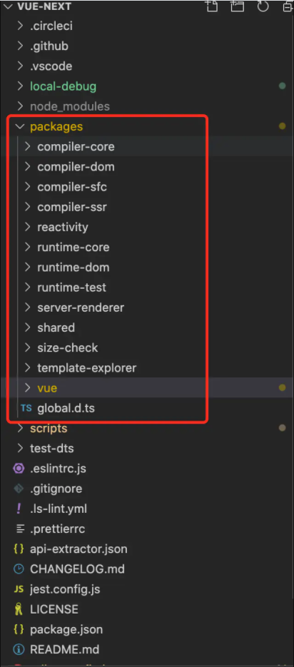

- reactivity：响应式系统。它可以独立于框架使用。
- runtime-core：与平台无关的运行时核心。包括虚拟dom渲染器，组件实现和JavaScript API的代码。可以使用此程序包创建针对特定平台的高阶运行时（即自定义渲染器）
- runtime-dom：针对浏览器的运行时。包括对原生DOM API，attributes, properties, event事件相关的处理
- runtime-test：用于测试的轻量级运行时。它可以在任何JavaScript环境中“渲染”出一个纯JavaScript对象树。该树可用于声明正确的渲染输出。同时提供了一些工具：序列化树，触发事件，记录更新期间执行的实际节点操作
- server-renderer：服务端渲染相关的软件包
- compiler-core：与平台无关的编译器核心。包括编译器和所有与平台无关的插件的可扩展基础
- compile-dom：带有专门针对浏览器相关插件的编译器
- compiler-ssr：针对服务端渲染生成优化过的渲染函数的编译器
- template-explorer：用于调试编译器输出的开发工具。您可以运行yarn dev template-explorer并打开其index.html以获得基于当前源代码的模板编译副本。
还提供了模板浏览器的实时版本，可用于提供编译器错误的再现。您还可以从发布日志中选择特定版本
- shared：在多个软件包之间共享的内部实用程序（尤其是运行时和编译器软件包使用的与环境无关的utils）
- vue：“全面构建”，包括运行时和编译器